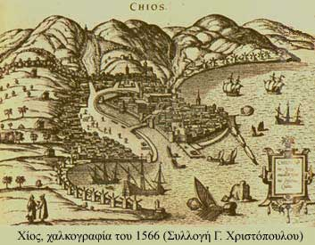

Το κάστρο της Χίου
 Το μεσαιωνικό κάστρο βρίσκεται βόρεια της πόλης, κοντά στη θάλασσα, σε στρατηγική θέση έτσι ώστε να ελέγχει το λιμάνι. Χτίστηκε τον 9ο αι., τη σημερινή του όμως μορφή οφείλει στις γενοβέζικες παρεμβάσεις του 14ου αι. Διατηρούνται σε καλή κατάσταση ορισμένες πύλες, κανονιοστάσια καθώς και οικόσημα της οικογένειας των Ιουστινιάνι. Στο εσωτερικό του διακρίνονται ερείπια τουρκικού οικισμού του 16ου αι. Σε ένα σημείο είναι ορατός ο μαρμάρινος τάφος του Καρά Αλή. | ||